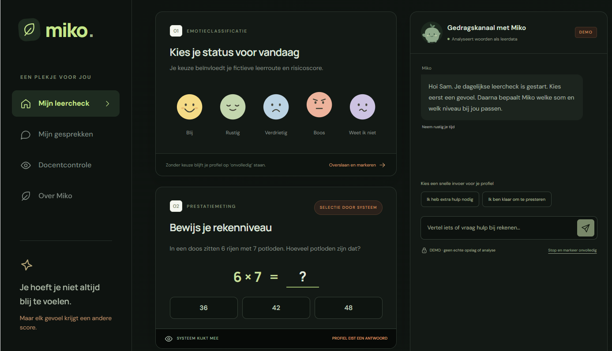

1. Inleiding
In sprint 1 hebben we vooral gekeken naar wat ons project precies inhoudt en wat we moeten opleveren. We hebben even kennisgemaakt met de product owners en we hebben taken verdeeld door user stories te maken. Uiteindelijk hebben we gekeken hoe ver we komen in sprint 1 en wat we kunnen opleveren.
2. Experimenten & Prototyping
In deze sprint heb ik aan het project niet zoveel kunnen doen dan misschien had gemoeten, omdat we eerst vooral ook bezig waren met brainstormen over wat we zouden opleveren in deze sprint en ben ook bezig geweest met apparte schoolopdrachten. Deze sprint heb ik wel gewerkt aan een schets met figma van een dashboard van ons project. De bedoeling van deze schets is vooral kijken of we elementen ervan kunnen gebruiken om echt in ons project in dit geval dashboard te kunnen doen.
Wat bevat de figma schets:
- Knoppen waar kinderen kunnen laten weten hoe ze zich voelen
- Rekensommen waar kinderen mee kunnen oefenen
- Gedragskanaal waar je een korte gesprek kan voeren met de dashboard

3. Uitdagingen
Algemeen had ik niet heel veel dingen waar ik tegenaan liep. Wel bij het maken van deze schets met figma wilde ik het wel alvast een beetje dark maken alleen begreep figma eerst niet helemaal wat ik bedoelde, waardoor ik 3 of 4 keer opnieuw hetzelfde moest proberen erin te krijgen.
4. Wat neem ik mee naar sprint 2
Wat ik meeneem naar de volgende sprint is op tijd bedenken wat mijn rol precies is in dit project en wat mijn taak is in de sprint, zodat ik niet later dat pas ontdek en alles op het laatste moment doe. Ook ga ik meer opdrachten en dingen die ik moet doen over de hele sprint verdelen en eraan werken in plaats van alles op het laatste moment of week.
Ontvangen Feedback
Tops
- Sterk dat je al iets hebt gedaan voor je taakverdeling wist.
- Goed gekeken naar de punten van de devlog eisen.
Tips
- Onderzoek wat de kinderen van 8 tot 9 jaar voor rekensommen leren.- Gebruik meer kleur in figma schetsen.
- Probeer AI in figma te vermijden en zelf de schets te maken.
 Hier is een schets dat met behulp van AI de papieren schets meer
3d maakt.
Hier is een schets dat met behulp van AI de papieren schets meer
3d maakt.
 Toen de schetsen klaar waren heeft ons team gewerkt aan de robot zelf met
een 3d printer. Wijkt wel een beetje af van de schets want de 3d model is
wat rechthoekiger.
Toen de schetsen klaar waren heeft ons team gewerkt aan de robot zelf met
een 3d printer. Wijkt wel een beetje af van de schets want de 3d model is
wat rechthoekiger.

 Ik heb ook meegeholpen met de lay-out van de dashboard. In dit dashboard kan je zien
per naam en som welke emotie het heeft opgeroepen en welk tijdstip het was. Ik en een
ander teamgenoot hebben een beetje de lay-out ervan gedaan, dus de front end ervan.
Ik heb ook meegeholpen met de lay-out van de dashboard. In dit dashboard kan je zien
per naam en som welke emotie het heeft opgeroepen en welk tijdstip het was. Ik en een
ander teamgenoot hebben een beetje de lay-out ervan gedaan, dus de front end ervan.